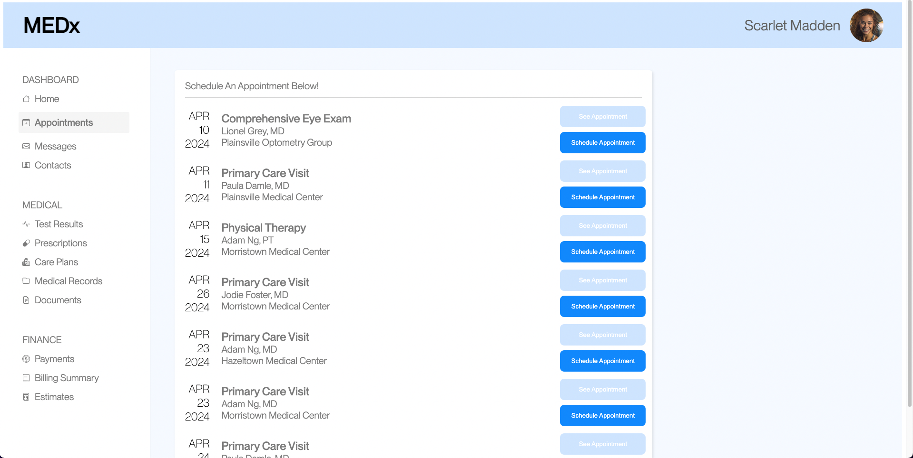

In the AB testing project, we're working to understand the underlying statistics for A/B tests on websites. In this assignment, we're creating a small change to a static HTML website, and testing the small changes in user interactions. A/B Testing helps us drive quantitative analysis on user interactions and helps us understand the impact of changes on user behavior due to design changes. In our website, we're measuring the change in users doing a specific task of scheduling the following: "Schedule an appointment with Adam Ng, MD at Morristown Medical Center on April 23, 2024"
In this project, I changed the 'schedule appointment' buttons to light blue to make them easier to see and make the interaction more clear. I also changed the title of the table to "Schedule an Appotinment Below" so users are more clear on what they have to do. I've attached a photo below.
The metric that I chose is the mouse movement distance, which is measured in pixels. I selected this metric because a well-designed website should have less mouse movement to get to the desired behavior. I wanted to test this idea and see if it’s true.
For misclick rate we used the chi^2 test since this was a categorical assessment. The chi^2 value was 6.428571429. This is a high chi^2 value and indicates that there is a significant deviation in misclicks than if we were to expect the misclicks to be the same in both versions. On the other hand, the p-value is 0.01, suggesting that there is a statistically significant difference between the two frequencies. Therefore, from this information, we can reject the null hypothesis and accept the alternative hypothesis that the two misclick rates are different.
For time on page we used the one tailed t-test. We used this t-test because the alternative hypothesis was to prove that time on page in B was less than in A. In this case, the mean of A is 38,216.95 while the mean of B is 9,046.29. The p-value is .999999998 for A < B. Since the p-value is so close to the hypothesis of A < B, then we can confidently reject this. Therefore, we can confidently state that B < A. Thus, we can reject the null hypothesis that these are the same, and accept the alternative hypothesis which states that B will be less than version A.
For mouse movement, I used the two-tailed t-test. We used this t-test because the alternative hypothesis was to prove that there is a difference between the time on page, rather than a certain direction. There is a difference between version A & version B which is statistically significant with a p-value of 0.0001. A high t-score indicates that there is a significant difference between the means, and a negative t-score (depending on the calculation), means that the mean of A is higher than the mean of B. Comparing the means, A has a mean of 8975.16572 while B has a mean of 2796.220981. A has a significantly higher mean and is statistically significant. Therefore, we can confidently reject the null hypothesis and accept the alternative hypothesis that these values are different.
In conclusion, the changes that I made to the website were successful in improving the user experience. The misclick rate was significantly different between the two versions, with the new version having a lower misclick rate. The time on page was also significantly different between the two versions, with the new version having a lower time on page. The mouse movement distance was also significantly different between the two versions, with the new version having a lower mouse movement distance. Overall, I made effective changes and learned about the powerful nature of statistical tests to measure the impact of design changes on user